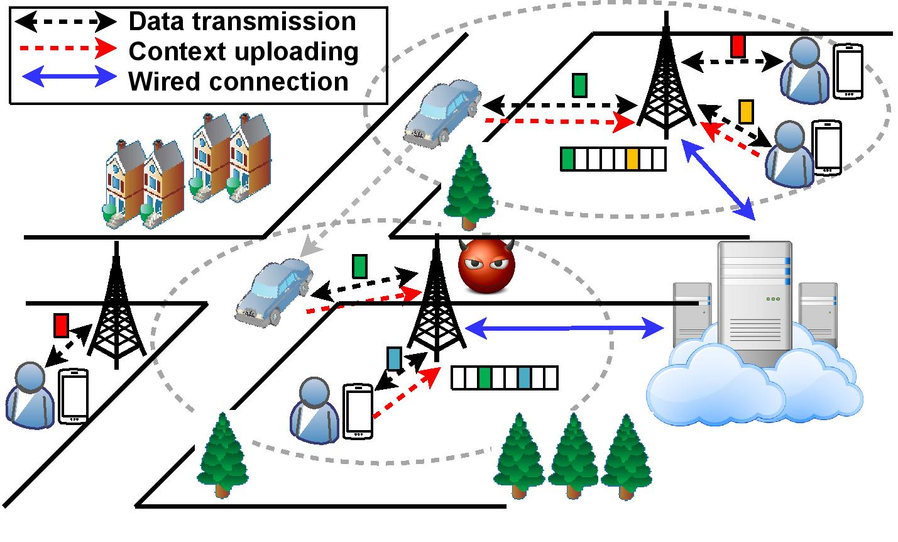

| |
| |
CAREER: Leveraging Context-Aware Sensing to Enhance QoE for Mobile Users: A Practical Framework Design
Sponsored by the U.S. National Science Foundation (Awards # CNS-1943509)
Duration: 05/01/2020-04/30/2025
|
|

|
|
|
Welcome to the website of our research project: "Leveraging Context-Aware Sensing to Enhance QoE for Mobile Users: A Practical Framework Design". This website is created and maintained to disseminate and share research results and other information related to the project.
Project Description
Due to the proliferation of powerful mobile terminals, resource-demanding multimedia applications, such as video streaming, video calls, and online gaming, have been surging during the past decade. How to improve the satisfaction of these applications as perceived subjectively by end-users, widely interpreted as the quality of experience (QoE), is critical to the operators of wireless networks. Prevailing QoE enhancement methods are mostly operator-oriented, while users play somewhat limited roles. On the other hand, mobile devices are equipped with multiple embedded sensors that enable the collection and inference of rich contextual information. Motivated by these observations, this project aims to leverage user-centric context sensing to enhance QoE in wireless networks. The proposed user-assisted QoE enhancement, if successful, has the potential to serve as a promising complement to the existing centralized QoE management framework. Besides, it will open up new opportunities that incorporate mobile users for network measurement and management that has been mostly conducted by network operators alone. The project plans to engage female and under-represented minority students in the research activities and actively outreach to middle and high school students. The scholarly discovery will be disseminated broadly to the community.
This project intends to develop a practical framework to leverage context sensing for QoE enhancement and address critical challenges involved therein. More specifically, the proposed research will be carried out through three closely related research thrusts. The first thrust studies fine-granular user context prediction based on historical records harvested from mobile devices. As another key ingredient, it further investigates how to utilize the prediction results to assist with resource provisioning and QoE improvement in wireless networks. Realizing that context sensing may incur extra communication and energy overhead, the second thrust intends to reduce the cost by developing cost-efficient context sampling and accurate reconstruction that adapt to context dynamics. The third thrust addresses the privacy concern during context sensing. A flexible context trading framework will be developed to allow individual users to decide how much privacy to disclose in the trade of QoE improvement. The proposed research is inter-disciplinary, which spans resource management, learning techniques, compressive sensing, differential privacy, and economic theories. The proposed mechanisms and designs will be thoroughly evaluated via a combination of measurement campaigns, simulations, and experimental studies. A medium-scale prototype of off-the-shelf mobile devices, routers, servers, and cloud will be implemented.

Figure: System architecture.
Personnel
Principal Investigator
 |
Dr. Ming Li (Lead PI)
Associate Professor
Department of Computer Science and Engineering
The University of Texas at Arlington
Email: ming.li@uta.edu
Homepage: http://ranger.uta.edu/~mingli |
Current Graduate Students
 |
Mingyan Xiao
Ph.D. student (Feb 2017 - Present)
Department of Computer Science and Engineering
The University of Texas at Arlington
Email:mingyan.xiao@mavs.uta.edu
Homepage: |
|
Huadi Zhu
Ph.D. student (Aug 2019 - Present)
Department of Computer Science and Engineering
The University of Texas at Arlington
Email: huadi.zhu@mavs.uta.edu
Homepage: |
Publications
-
Eliciting Joint Truthful Answers and Profiles from Strategic Workers in Mobile Crowdsourcing Systems,
Mingyan Xiao, Wenqiang Jin, Chengkai Li, and Ming Li
IEEE Transactions on Mobile Computing (TMC), 2022.
Summary: —Mobile crowdsourcing has emerged as a promising paradigm that applies the principle of crowdsourcing to perform tasks of
mobility requirement. Due to the openness of mobile crowdsourcing, workers may yield low-quality task answers. To alleviate this
problem, substantial efforts have been devoted to elicit truthful data from workers. On the other hand, to facilitate task assignment,
workers are required to upload the platform their profiles, such as locations and expertise. Therefore, task assignment outcomes and
thus mobile crowdsourcing service accuracy is subject to the quality of workers’ self-reported profiles. In this paper, we leverage
incentive design to motivate workers to honestly reveal both task answers and their profiles. The challenge is to design one incentive
payment for truth elicitation in two kinds of submissions. For this, we first derive the sufficient and necessary conditions for answer
truthfulness and profile truthfulness separately. We then construct an incentive optimization problem that incorporates these conditions
as constraints. Its optimal solution lists the payment to each worker that elicits answers and profiles jointly. Our proposed mechanism,
with a formally proved bounded approximation ratio, ensures that truth-telling is a Bayesian Nash equilibrium. We prototype the
mechanism and conduct a series of experiments that involve 30 volunteers to validate the efficacy and efficiency of the proposed
mechanism
-
EyeQoE: A Novel QoE Assessment Model for 360-degree Videos Using Ocular Behaviors,
Huadi Zhu, Tianhao Li, Chaowei Wang, Wenqiang Jin, Srinivasan Murali, Mingyan Xiao, Dongqing Ye, Ming Li
ACM International Joint Conference on Pervasive and Ubiquitous Computing (Ubicomp), 2022.
Summary: As virtual reality (VR) offers an unprecedented experience than any existing multimedia technologies, VR videos, or called
360-degree videos, have attracted considerable attention from academia and industry. How to quantify and model end users’
perceived quality in watching 360-degree videos, or called QoE, resides the center for high-quality provisioning of these
multimedia services. In this work, we present EyeQoE, a novel QoE assessment model for 360-degree videos using ocular
behaviors. Unlike prior approaches, which mostly rely on objective factors, EyeQoE leverages the new ocular sensing modality
to comprehensively capture both subjective and objective impact factors for QoE modeling. We propose a novel method that
models eye-based cues into graphs and develop a GCN-based classifier to produce QoE assessment by extracting intrinsic
features from graph-structured data. We further exploit the Siamese network to eliminate the impact from subjects and visual
stimuli heterogeneity. A domain adaptation scheme named MADA is also devised to generalize our model to a vast range of
unseen 360-degree videos. Extensive tests are carried out with our collected dataset. Results show that EyeQoE achieves the
best prediction accuracy at 92.9%, which outperforms state-of-the-art approaches. As another contribution of this work, we
have publicized our dataset on https://github.com/MobiSec-CSE-UTA/EyeQoE_Dataset.git.
-
Collusion-Resistant Worker Recruitment in Crowdsourcing Systems,
Mingyan Xiao, Wenqiang Jin, Ming Li, Lei Yang, Arun Thapa, and Pan Li,
IEEE Transactions on Mobile Computing (TMC), 2021.
Summary: In the wake of the Web 2.0, crowdsourcing has emerged as a promising approach to maintain a flexible workforce for human intelligence tasks. To stimulate worker participation, many reverse auction-based incentive mechanisms have been proposed. Designing auctions that discourage workers from cheating and instead encouraging them to reveal their true {cost information} has drawn significant attention. However, the existing efforts have been focusing on tackling individual cheating misbehaviors, while the scenarios that workers strategically form collusion coalitions and rig their bids together to manipulate auction outcomes have received little attention. To fill this gap, in this work we develop a $(t,p)$-collusion resistant scheme that ensures no coalition of \emph{weighted cardinality} $t$ can improve its group utility by coordinating the bids at a probability of $p$. This paper takes into account the unique features of crowdsourcing, such as diverse worker types and reputations, in the design. The proposed scheme can suppress a broad spectrum of collusion strategies. Besides, desirable properties, including $p$-truthfulness and $p$-individual rationality, are also achieved. To provide a comprehensive evaluation, we first analytically prove our scheme’s collusion resistance and then experimentally verify our analytical conclusion using a real-world dataset. {Our experimental results show that the baseline scheme, where none of the critical properties is guaranteed, costs up to 20.1 times the optimal payment in an ideal case where no collusion exists, while our final scheme is merely 4.9 times the optimal payment.}
-
Privacy-Preserving Data Aggregation for Mobile Crowdsensing with Externality: An Auction Approach,
Mengyuan Zhang, Lei Yang, Shibo He, Ming Li, and Junshan Zhang,
ACM/IEEE Transactions on Networking (ToN), 2021.
Summary: We develop an auction framework for
privacy-preserving data aggregation in mobile crowdsensing,
where the platform plays the role as an auctioneer to recruit
workers for sensing tasks. The workers are allowed to report
noisy versions of their data for privacy protection; and the
platform selects workers by taking into account their sensing
capabilities to ensure the accuracy level of the aggregated result.
Observe that when moving the control of data privacy from the
data aggregator to the workers, the data aggregator has limited
market power in the sense that it can only partially control
the noise by judiciously choosing a subset of workers based
on workers’ privacy preferences. This introduces externalities
because the privacy of each worker depends on the total noise
in the aggregated result that in turn relies on which workers
are selected. Specifically, we first consider a privacy-passive
scenario where workers participate if their privacy loss can
be adequately compensated by the rewards. We explicitly
characterize the externalities and the hidden monotonicity
property of the problem, making it possible to design a truthful,
individually rational and computationally efficient incentive
mechanism. We then extend the results to a privacy-proactive
scenario where workers have individual requirements for their
perceivable data privacy levels. Our proposed mechanisms
for both scenarios can select a subset of workers to (nearly)
minimize the cost of purchasing their private sensing data
subject to the accuracy requirement of the aggregated result.
We validate the proposed scheme through theoretical analysis
as well as extensive simulations.
-
ULPT: A User-Centric Location Privacy Trading Framework for Mobile Crowd Sensing,
Wenqiang Jin, Mingyan Xiao, Linke Guo, Lei Yang, and Ming Li,
IEEE Transactions on Mobile Computing (TMC), 2021.
Summary: We construct a location privacy trading framework for MCS with an auction approach, where the platform provides incentives to motivate workers to complete sensing tasks. We incorporate the notation of \emph{geo-distinguishability} in our mechanism design. Workers with different location privacy leakage budgets have freedom to choose how much privacy to disclose to the platform, in trade of different monetary reward. Taking into account of budget constraint, service accuracy, and privacy protection, we formulate an optimization problem, which is proved to be at least NP-hard. To efficiently solve it, a heuristic algorithm is proposed, with bounded computation complexity and optimality gap. More importantly, the paper provides a rigorous theoretical analysis over the design objectives, including $\xi$-\emph{privacy}, $(\alpha, \beta)$-\emph{accuracy}, \emph{budget feasibility}, as well as their comprehensive tradeoff relations. All these theoretical results have been validated through extensive simulations based on New York City's 311 platform dataset.
-
STEP: A Spatio-Temporal Fine-Granular User Traffic Prediction System for Cellular Networks,
Lixing Yu, Ming Li, Wenqiang Jin, Yifan Guo, Qianlong Wang, Feng Yan, and Pan Li,
IEEE Transactions on Mobile Computing (TMC), 2020.
Summary: While traffic modeling and prediction are at the heart of providing high-quality telecommunication services in cellular networks and attract much attention, they have been approved as an extremely challenging task. Due to the diverse network demand of Internet-based apps, the cellular traffic from an individual user can have a wide dynamic range. Most existing methods, on the other hand, model traffic patterns as probabilistic distributions or stochastic processes and impose stringent assumptions over these models. Such assumptions may be beneficial at providing closed-form formula in evaluating prediction performances, but fall short for practice use. In this paper we propose STEP, a spatio-temporal fine-granular user traffic prediction mechanism for cellular networks. A deep graph convolution network, called GCGRN, is constructed. It is a novel combination of the graph convolution network (GCN) and gated recurrent units (GRU), which exploits graph neural network to learn an efficient spatio-temporal model from a user's massive dataset for traffic prediction. Extensive experimental results demonstrate that our model outperforms the state-of-the-art time-series based approaches. Besides, STEP merely incurs mild energy consumption, communication overhead and system resource occupancy to mobile devices. NS-3 based simulations validate the efficacy of STEP in reducing session dropping ratio in cellular networks.
Disclaimer: The papers here are made available for timely dissemination of scholarly and technical work. Copyright and all rights therein are retained by authors or by other copyright holders.
Curriculum Development
At The University of Texas at Arlington:
- CS 4344: Computer Networks,
- CS 5349/6349: Special Topic on Internet of Things.
Note: Any opinions, findings and conclusions or recommendations expressed on this website are those of the author(s) and do not necessarily reflect the views of the National Science Foundation (NSF).
|
| |
|
|